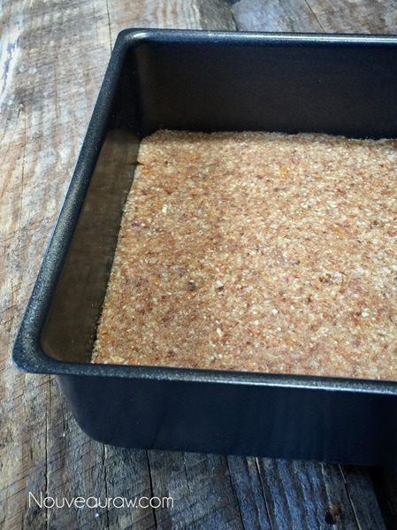
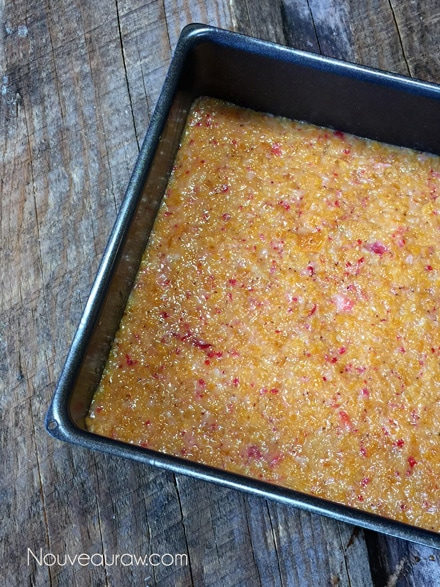
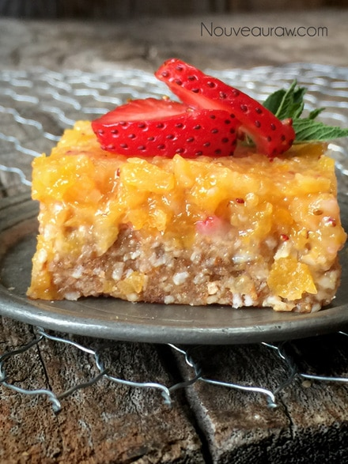
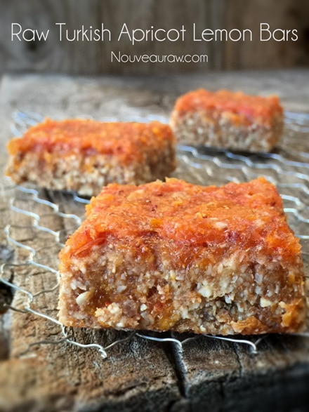

Turkish Apricot Lemon Bars

~ raw, vegan, gluten-free, Paleo ~
Did you know that in Latin, apricot means “precious,” a label earned because it ripens earlier than other summer fruits. Now that I know that, I will look at apricots differently… precious… I like that.
Apricots are akin to peaches. The apricot is just minus the fuzzy skin that a peach has. Both the apricot and the peach are members of the rose family. One apricot tree can produce fruit for as many as 25 years, its fruit picked by hand when firm.
Finding good apricots, whether they are fresh or dried, can be tricky. If you have a hard time finding seeing them, it is a sure sign that you need to add them into your diet, because apricots are a great source of vitamin A, which is good for your eyesight. (hehe) One good thing to know about vitamin A is that it is a fat-soluble vitamin, which requires fats to help the body absorb them.
Bring in the healthy fats!
With the addition of almonds (fats) in this recipe, you will be able to absorb all the beautiful benefits of the vitamin A found in the apricots… great for your vision, proper immune system function, reproduction, and maintaining healthy skin, teeth, and skeletal and soft tissue.
This bar recipe can be made in a single layer or double layer bar. For a single layer, you will make one batch of the bottom crust layer, topping it off with the apricot jam. For a double layer, you will make it the same way as mentioned above, but you will also make one more batch of the crust layer. You will then place that on top of the jam, creating a sandwich effect. Here, I made them in a single layer. Want to make it even more amazing? Pop them in the dehydrator to warm them up… oooh mama! Nothing quite like warm apricots to make your taste buds sing.
04/07/15 Update: I have tested these bars fresh, as is once all the ingredients are put together. Amazing! The flavor is fresh, light, and delicate. You can easily pick them up to eat them, but you can’t wrap them individually. I also did a test batch where I dehydrated them at 115 degrees (F) for 16 hours. They turned equally amazing, but the texture and flavor did change. Flavor-wise, they became almost sweeter and more concentrated. Texture-wise, they dried up considerably and could be wrapped individually in plastic wrap. Enjoy!
Ingredients:
Yields 8 x 8″ pan / 16 bars
Crust:
- 1 1/2 cup Medjool dates, pitted
- 1 cup raw almonds, soaked & dehydrated
- 1 tsp Himalayan pink salt
- 1 cup shredded coconut, unsweetened
- 1 tsp vanilla extract
- Zest of one lemon
- 2 Tbsp fresh lemon juice
Apricot jam:
- 1 cup Turkish (or whatever you have) apricots (diced)
- 1 cup fresh strawberries, organic
Preparation:
Crust:
- Re-hydrate the dates by placing them in a bowl and adding enough warm water to cover them. Set aside for roughly 15 minutes.
- The re-hydration will help to soften the dates, making them easier to blend.
- Once they are done soaking, drain, and discard the soak water. Hand-squeeze the excess water from them as well.
- Tip: you can save the soak water and use it in a smoothie to add a bit of natural sweetness.
- Place the almonds and the salt in the food processor — process to a small crumble texture.
- Don’t over-process, creating a nut butter, unless, of course, that is what you want :).
- Add the shredded coconut and pulse together.
- If you only have coconut flakes on hand, place them in the food processor by themselves and break them down to a small crumble.
- Add the vanilla, lemon zest and juice.
- Zest the lemon before you cut and juice it. This will make that task easier.
- Line the base of 8 x 8″ pan and firmly press the crust into the base, nice and even. Set aside as you prepare the jam.
Jam:
- Combine the apricots and strawberries in your food processor and process until it creates a paste-like texture.
- This makes an excellent jam for crackers and breads as well.
- Using a combination of dried and fruit creates a great texture that isn’t too runny or thick.
Assembly:
- Spread jam mixture on top of the bottom layer of the bars.
- Then place the remaining batter on top of the jam if you are making a sandwich effect.
- Press gently, so you don’t squish all the jam out, cover, and place in the fridge to chill.
- I like to slice the bars and wrap each one in cling wrap for the ease of “grab-in-go.”
- Store the leftovers in the fridge for 1-2 weeks or in the freezer for up to 3 months.
Dehydration Option:
- Above, I shared that these bars are lovely fresh as well as they are dehydrated. Please read above just in case you skipped all of that.
- After assembling the bars and cutting them into 2″ squares, place the bars on the mesh sheet that comes with the dehydrator.
- Dry at 145 degrees (F) for 1 hour, then reduce to 115 degrees (F) for up to 16 hours. I recommend that you check on them off and on till they reach the texture that you want.
- Allow them to cool before wrapping.
- This step dramatically increases its shelf life. I would safely give them a few weeks, if not longer.
Culinary Explanations:
- Why do I start the dehydrator at 145 degrees (F)? Click (here) to learn the reason behind this.
- When working with fresh ingredients, it is essential to taste test as you build a recipe. Learn why (here).
- Don’t own a dehydrator? Learn how to use your oven (here). I do, however honestly believe that it is a worthwhile investment. Click (here) to learn what I use.
For this recipe, I used my 8×8″ pan that has a bottom that lifts out.
Perfect for bar making. I like to wrap it with plastic wrap for ease
of removal. Press the bottom crust layer evenly and firmly into the pan.

Spread the jam on top and slide it into the fridge to chill.

Once chilled, lift the base out and cut into 2″ squares. Enjoy
right away or pop in the dehydrator to warm them.

The above photo – No dehydrating involved.
The below photo – Dehydrated for 16 hours.

© AmieSue.com